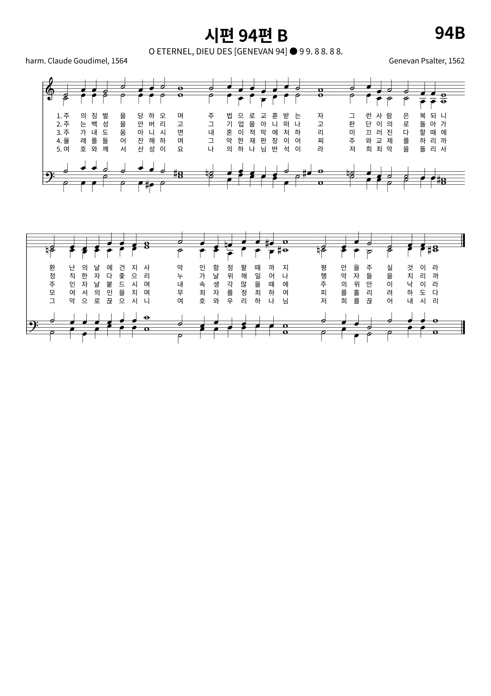

Psalm 94B
O ETERNEL, DIEU DES [GENEVAN 94] · 9 9. 8 8. 8 8.
English title: O LORD of Vengeance, Show Thy Glory
Tune: Genevan Psalter, 1562 · Harmony: Claude Goudimel, 1564 · Lyrics: Korean adaptation of Psalm 94 from the Korean Revised Version (AI draft adaptation · not yet theologically reviewed) · 5 stanzas
Psalm 94 is divided into 2 tunes: A B · This tune contains stanzas 6–10 of the Psalm 94 lyrics.
Score PDF MusicXML (for printing) MusicXML (for accompaniment, with prelude and repeats) Read Psalm 94 (Korean Revised Version)
Score
← Psalm 94A ListAccompaniment (in preparation)Psalm 95 →
Lyrics (Korean)
Stanza 1
주의 징벌을 당하오며
주 법으로 교훈받는 자
그런 사람은 복되니
환난의 날에 건지사
악인 함정 팔 때까지
평안을 주실 것이라
주의 징벌을 당하오며
주 법으로 교훈받는 자
그런 사람은 복되니
환난의 날에 건지사
악인 함정 팔 때까지
평안을 주실 것이라
Stanza 2
주는 백성을 안 버리고
그 기업을 아니 떠나고
판단이 의로 돌아가
정직한 자 다 좇으리
누가 날 위해 일어나
행악자들을 치리까
주는 백성을 안 버리고
그 기업을 아니 떠나고
판단이 의로 돌아가
정직한 자 다 좇으리
누가 날 위해 일어나
행악자들을 치리까
Stanza 3
주가 내 도움 아니시면
내 혼이 적막에 처하리
미끄러진다 할 때에
주 인자 날 붙드시며
내 속 생각 많을 때에
주의 위안이 낙이라
주가 내 도움 아니시면
내 혼이 적막에 처하리
미끄러진다 할 때에
주 인자 날 붙드시며
내 속 생각 많을 때에
주의 위안이 낙이라
Stanza 4
율례를 들어 잔해하며
그 악한 재판장이 어찌
주와 교제를 하리까
모여서 의인을 치며
무죄자를 정죄하여
피를 흘리려 하도다
율례를 들어 잔해하며
그 악한 재판장이 어찌
주와 교제를 하리까
모여서 의인을 치며
무죄자를 정죄하여
피를 흘리려 하도다
Stanza 5
여호와께서 산성이요
나의 하나님 반석이라
저희 죄악을 돌리사
그 악으로 끊으시니
여호와 우리 하나님
저희를 끊어 내시리
여호와께서 산성이요
나의 하나님 반석이라
저희 죄악을 돌리사
그 악으로 끊으시니
여호와 우리 하나님
저희를 끊어 내시리